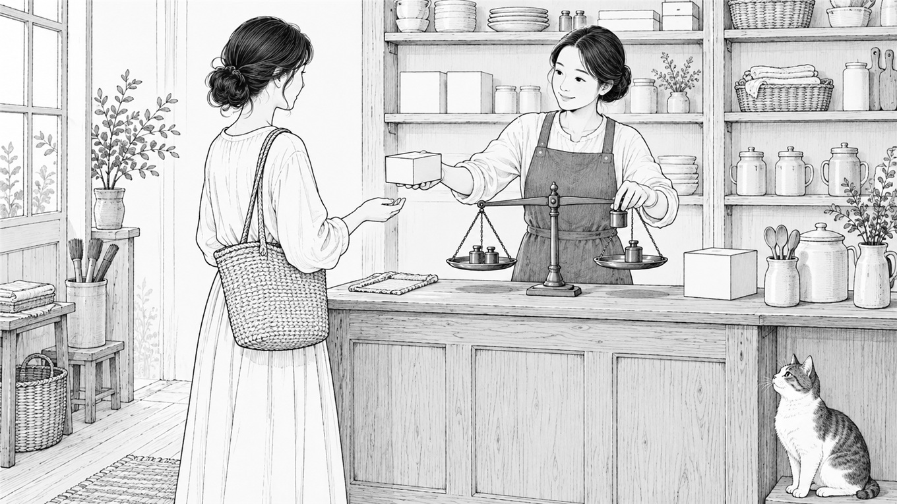

返金保証って、つけたほうがいいんでしょうか。

どーも！とーるです！
「返金保証って、つけたほうがいいんでしょうか」
これ、聞かれます。
で、調べると出てくるのはだいたい2種類です。
「つけましょう。成約率が上がります」
「やめましょう。悪用されます」
どっちも見たことある結論で、正直、これだけでは判断できないですよね。
なので今回は、分ける基準の話をします。
損失回避——返金保証は「安心させるもの」じゃない
よく「安心して買ってもらうため」と言われます。
半分合ってて、半分違うと思っていて。
返金保証がやっているのは、気持ちの問題じゃなくて、リスクを、買う側から売る側へ移すことです。
例えば、1万円の商品を買うとき。
買う側はこう考えます。
「だめだったら1万円が無駄になる」
行動経済学ではこれを損失回避と呼びます。
人は、得をする可能性より、損をする可能性のほうに強く反応する。
だから、いい商品でも手が止まる。
この「手が止まる」、ちょうど数字が出ていました。
オーストラリアで、返品サービスの会社（Loop）が9月に公表した調査です。
過去半年にネットで返品をしたことがある人、1,000人に聞いたもの。
55％が、返品のルールを理由に、ファッションブランドで買うのをやめたことがある。
そして、85％が、買う前に返品のルールを（少なくとも時々は）確認している。
国も商品のジャンルも違うので、そのまま日本の講座に当てはめるつもりはないです。
ただ、人がどこを見て「買わない」を選んでいるかは、よく分かります。
値段より、「失敗したときにどうなるか」を見ているんですよね。
行動経済学では、これを後悔回避と言ったりします。
「買って後悔するくらいなら、買わないでおこう」という動きです。
ここで返金保証があると、「損するかも」が消えます。
すると判断が、「欲しいかどうか」だけに戻る。
これが効く理由です。
僕も、動画講座につけています
実際の話をしておきます。
僕の動画講座も、返金保証をつけたことで購入者が増えました。
もちろん、速攻で返金申請される方もいます。
それでも、つけなかったときより売上は上がっています。
数字を出して「返金率は何％です」とかは言いません。
うちの規模では、そこまで断定できるサンプル数になっていないので。
ただ、つける前とつけたあとで比べれば、上がっている。
これは事実です。
返金されるのは痛いです。
痛いんですけど、買われないよりはいいということだと思っています。
つけないほうがいいケースがあります
でも、全部につければいいかというと、そうでもないと思っています。
僕が「これは慣れないな」と思うのは3つです。
① 成果が相手の行動量に左右される商品に、無条件の返金
ダイエット、学習、発信。
この手の商品で「効果がなければ返金」とやると、効果の判定でもめます。
やってないのか、合わなかったのか、外から見て分からないので。
② 提供コストが先に出るもの
制作代行、仕入れ、個別の時間。
返金しても、こちらの時間は戻ってこないんですよね。
③ 価格が低いもの
300円の商品に返金保証をつけると、手続きの手間のほうが大きくなります。
そもそも300円なら損失回避がそこまで働かないので、効果も薄いです。
つまり、返金保証が効くのは「迷うぐらいの金額」のときだけだと思っています。
つけるなら、条件は「期間」だけにする
ここが一番実用的かもしれません。
条件は、増やすほど弱くなります。
✖ 「効果がなければ返金」
→ 効果の判定でもめます。
✖ 「ご満足いただけなければ返金」
→ 満足も、外からは判定できません。
◯ 「購入後◯日以内なら、理由を問わず返金」
→ 判定がいりません。
期間で区切るだけなら、もめようがないんですよね。
「いつまでに言えばいいか」だけで決まるので、買う側も分かりやすい。
そして、条件を増やすほど疑われます。
「ただし」「かつ」「当社が認めた場合に限り」。
こういう但し書きが並んだ返金保証は、読む側からすると、ないのと同じに見えるんです。
さっきの調査にも、これに近い数字がありました。
返品に手数料がかかるお店だと、37％が、そのお店で買う回数を減らしたと答えています。
返品はできる。
でも、条件や手間がついている。
それだけで、買う側の足は止まるんです。
僕も、期間を区切るだけにしています。
考えることが少ないほうが、結局いちばん効くと思っていて（笑）
結局、何を決めているのか
返金保証をつけるかどうかは、売上テクニックの話に見えて、実はこういう話だと思っています。
この取引のリスクを、どちらがどれだけ背負うのか。
全部こちらが背負うのが正しいわけでも、全部相手に渡すのが正しいわけでもない。
自分の商品が、どこまでなら引き受けられるのか。
そこが決まれば、文面はあとからでも書けます。
とーる｜猫好きの行動経済アナリスト